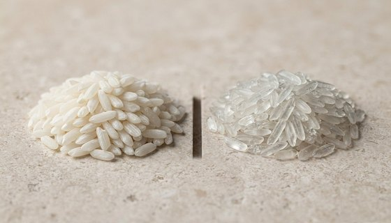
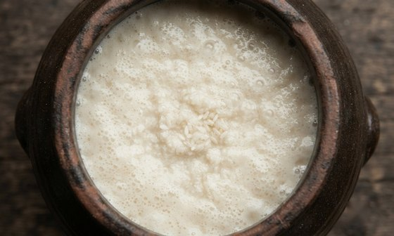

WHAT MAKES OUR SOOL
쌀부터 다르게
시작합니다
술을 빚기 위해 태어난 쌀 설갱미,
열을 가하지 않는 생쌀발효법
설갱미
설갱미는 술을 빚기 위한
최적의 쌀입니다
단백질이 낮고 유리당과
필수 아미노산이 많습니다.

설갱미 일반미NUTRITION
우수한 영양성
필수아미노산많을수록 좋음
설갱미32.05
일반미29.78
leucine많을수록 좋음
설갱미8.51
일반미7.17
단백질낮을수록 잡미가 적음
설갱미6.2%
일반미6.8~7.0%
-
SEOLGAENG
설갱미
잡미와 쓴맛이 적고 맛이 부드럽고 깔끔합니다.
-
NORMAL
일반미
쓴맛과 떫은맛으로 맛이 거칠고, 끝 맛에 잡미가 남습니다.
생쌀발효법
높은 열을 가하지 않고,
가루 낸 생쌀과 상온의 물로
빚는 방법입니다.
"쌀을 가루 내 끓는 물을 부어
반죽하여 술을 빚는다"
그렇다면 그 쌀이 다 익었을까? 이 의문에서 연구가 시작됐습니다. 생쌀을 분해할 수 있는 거미줄 곰팡이를 분리해 생쌀발효법을 복원했습니다.

MERIT
생쌀발효법의 장점
-
01
우수한 영양
필수 아미노산과 비타민 B군이 풍부하고 조단백질이 낮습니다.
-
02
숙취 감소
숙취 원인 물질을 분해하는 촉진물질이 풍부합니다.
-
03
에너지 절약
전체 공정에서 에너지를 60% 줄입니다.
-
04
친환경 공법
쌀을 찌지 않아 이산화탄소 발생량이 줄어듭니다.
PROMISE
농가와의 약속재배
기업과 농민이 함께 사는 방식으로
설갱미를 기릅니다.
- 620t
연간 계약 물량
- 96농가
강원도 횡성 (2018)